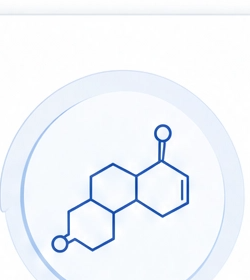
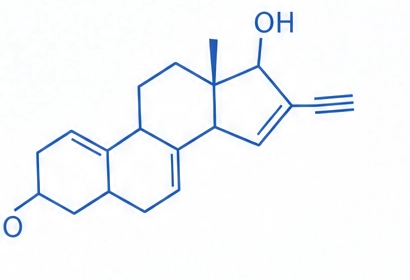

主要来源
药物来源
主要存在于含炔雌醇的口服避孕药中，代谢产物可经排泄进入环境。
环境污染
在污水处理出水、地表水及部分饮用水中可检出，可经饮水和食物链进入人体。
环境荷尔蒙评估健康管理报告 | 05/10
深入理解关键指标的来源、作用及其对健康的影响

合成雌激素是人工合成或环境中存在的类雌激素化学物质，可干扰体内激素平衡，对女性健康产生多方面影响。

该指标提示外源性合成雌激素暴露需要重点管理，建议优先排查药物、饮水与塑化材料相关接触源。
主要存在于含炔雌醇的口服避孕药中，代谢产物可经排泄进入环境。
在污水处理出水、地表水及部分饮用水中可检出，可经饮水和食物链进入人体。
可能影响下丘脑-垂体-性腺轴调节节律。
长期暴露可能与月经紊乱、排卵障碍等问题相关。
雌激素样刺激增加时，可能提升乳腺组织的敏感性。
与肝脏代谢负荷和慢性炎症背景可能存在交互影响。
本报告仅供健康管理参考，不能替代专业医疗诊断。如有健康问题，请及时就医。